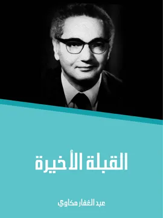

القبلة الأخيرة

قراءة عربية أصلية محددة النطاق في الصفحات 9 إلى 13 من ملف PDF المرتبط، وليست تلخيصا كاملا للكتاب. نناقش ما تدعمه هذه المقاطع فقط.
عتريس يقف على رأسه في المقام
يكتب مكاوي بلغة مسرحية حية تكاد تُسمع: حوار طويل بين عتريس وصاحبة المقام يمزج العامية بالوجد، والبهلوان العجوز يراجع زمنه: الناس غير أيام زمان، شعرك أبيض قلبك تعب يا عتريس، والقلب لا يتعب من ذكرك يا ست. حين يقف على رأسه في وسط المقام يحس أن الشباب عاد إليه، فيهجم عليه الحارس ممسكًا برقبته، وتنتهي المأساة الصغيرة في زنزانة على برش خشن وسط الفيران والبراغيث، لكنه يرفض أن يقر بالتعب. القصص التالية في المجموعة تمضي في نفس عالم الشخصيات المهزومة بكرامة، ومنها «يونس في بطن الحوت».
زاوية وحدود القراءة
قراءة موجزة من ص ٩ إلى ص ١٣ من أصل ١٧٤ صفحة، تعرض القصة الأولى ومطلع الثانية، لا المجموعة كاملة.
الطبعة والقراءة
هذه النسخة من الكتاب صادرة ومتاحة مجانًا بموجب اتفاق قانوني بين مؤسسة هنداوي وأسرة السيد الدكتور عبد الغفار مكاوي.
تنزيل PDF المجاني ↓ القراءة والمصدر الرسمي ↗